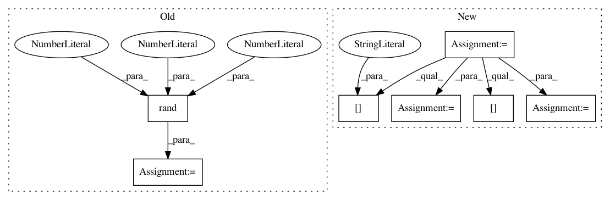

0a80b9769115d291f15c244429793eda4cb8ecad,tests/test_layer_transformer.py,,test_conv_to_wider_layer,#,60
Before Change
model2.compile(loss=categorical_crossentropy,
optimizer=Adadelta(),
metrics=["accuracy"])
random_input = np.random.rand(1, 28, 28, 1)
output1 = model.predict_on_batch(random_input)
output2 = model2.predict_on_batch(random_input)
assert np.sum(output1.flatten() - output2.flatten()) < 1e-4
After Change
def test_conv_to_wider_layer():
model = get_conv_model()
conv1 = model.layers[1]
conv2 = model.layers[4]
bn1 = model.layers[2]
new_conv1, [new_conv2], [new_bn1] = conv_to_wider_layer(conv1, [conv2], [bn1], 3)
new_input = Input(shape=get_int_tuple(model.inputs[0].shape[1:]))
temp_tensor = new_conv1(new_input)
temp_tensor = new_bn1(temp_tensor)
temp_tensor = Activation("relu")(temp_tensor)
temp_tensor = new_conv2(temp_tensor)
In pattern: SUPERPATTERN
Frequency: 4
Non-data size: 7
Instances
Project Name: jhfjhfj1/autokeras
Commit Name: 0a80b9769115d291f15c244429793eda4cb8ecad
Time: 2017-12-28
Author: jhfjhfj1@gmail.com
File Name: tests/test_layer_transformer.py
Class Name:
Method Name: test_conv_to_wider_layer
Project Name: arraiy/torchgeometry
Commit Name: 73317ca61e33b42353fc4b3010f586124954ca18
Time: 2019-12-19
Author: diegovd0296@gmail.com
File Name: examples/data_augmentation.py
Class Name: DummyDataset
Method Name: __getitem__
Project Name: arraiy/torchgeometry
Commit Name: dcd394f4a5bddb1fc97ae4a7224e00147fc110a3
Time: 2020-01-15
Author: diegovd0296@gmail.com
File Name: examples/data_augmentation.py
Class Name: DummyDataset
Method Name: __getitem__